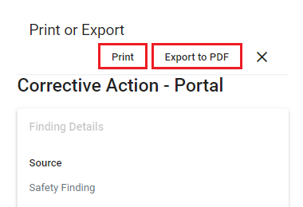

A read-only view of the task will display. The view will have Print, Exportto PDF, and Back to previous view buttons.

To print the task, click Print. If your device is connected to a printer, a Print dialog will display. Select your desired printer settings and click Print.
To export the task to PDF format, click Export to PDF. A PDF copy of the task will download to your device.
Click X to return to the task.
Notes re Printing and Exporting Questionnaires to PDF:
When questionnaires use section titles, all sections and pages are printed and exported to PDF. The section title name is included in the output to indicate new sections. Note For all sections to print or export, the first question must have a section title.
If images are attached to a questionnaire, the image file will be included. When non-image files are attached to a questionnaire, the file names will be listed above any images. Attached images from the Single Question look-up table, such as a reference image that never changes on a question, are not included.
Score classification for individual questions, as well as the total score, will be included.
The Advice pop-up and Legal Requirement pop-up are not included.
Most HTML codes, such as bolding (<b>) or italicizing (<i>), applied to questions are ignored in the print and export. Underlining (<u>) and font color (<font color = "color">) are maintained.